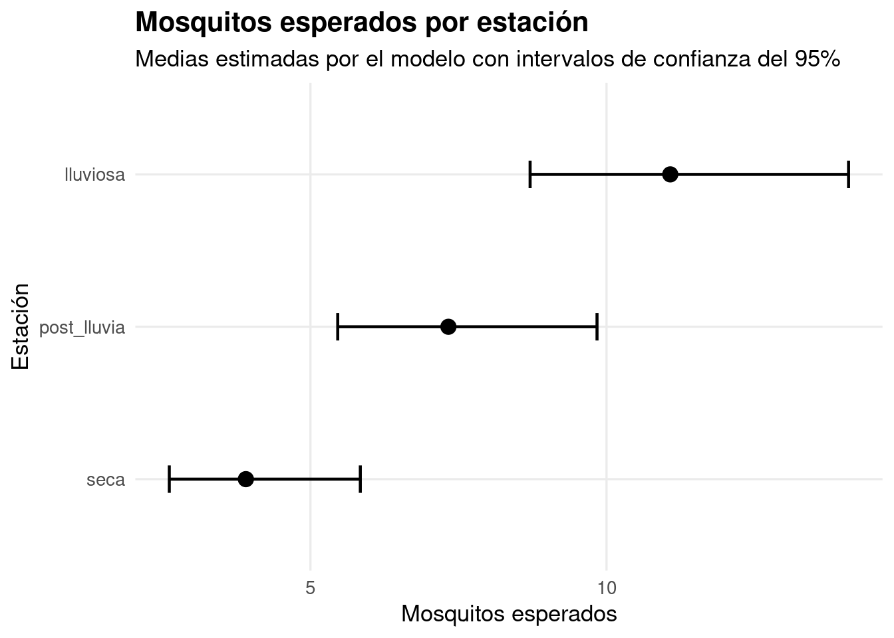
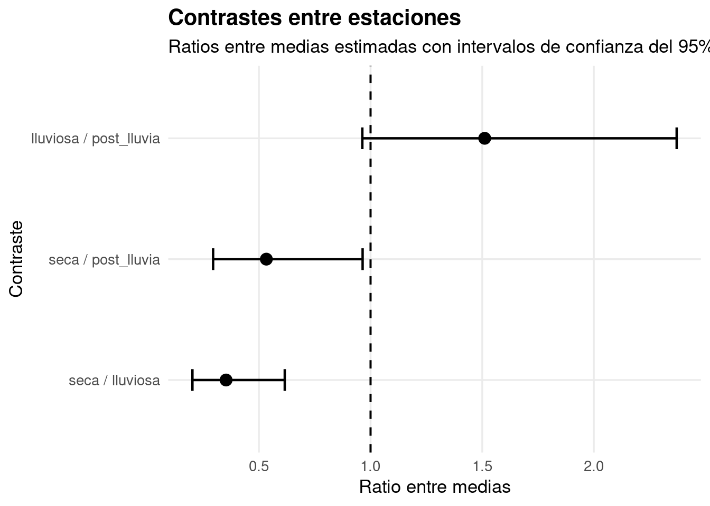
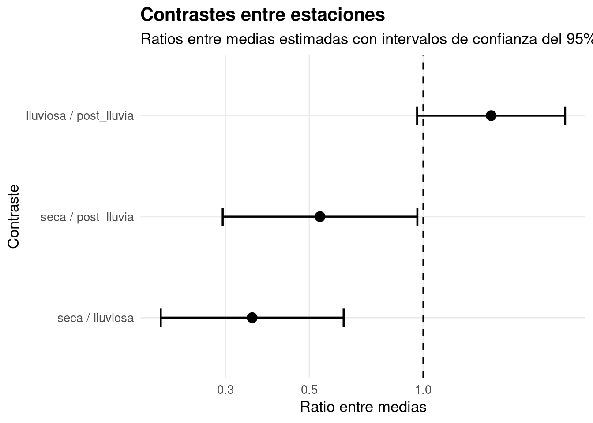

Season rate SE df asymp.LCL asymp.UCL
seca 3.91 0.801 Inf 2.62 5.84
lluviosa 11.08 1.360 Inf 8.71 14.09
post_lluvia 7.33 1.100 Inf 5.46 9.84
Results are averaged over the levels of: Habitat
Confidence level used: 0.95
Intervals are back-transformed from the log scale
Esto devuelve una fila por estación:
seca
lluviosa
post_lluvia
Como el modelo también tiene Habitat, emmeans promedia los hábitats.
Entonces esta tabla responde:
¿Cuántos mosquitos se esperan por estación, promediando los hábitats?
5.3 Contrastes con pairs()
Después de tener las medias esperadas, puede aparecer otra pregunta:
¿Las estaciones son distintas entre sí?
Para eso usamos:
pairs(emm_season)
contrast ratio SE df null z.ratio p.value
seca / lluviosa 0.353 0.0838 Inf 1 -4.386 <0.0001
seca / post_lluvia 0.533 0.1350 Inf 1 -2.487 0.0344
lluviosa / post_lluvia 1.511 0.2900 Inf 1 2.148 0.0804
Results are averaged over the levels of: Habitat
P value adjustment: tukey method for comparing a family of 3 estimates
Tests are performed on the log scale
pairs() compara las filas de la tabla.
Si emm_season tiene:
seca
lluviosa
post_lluvia
entonces pairs() compara:
seca vs lluviosa
seca vs post_lluvia
lluviosa vs post_lluvia
Eso se llama contraste.
5.4 Qué es un contraste
Un contraste es una comparación entre dos medias.
En este caso:
seca vs lluviosa
pregunta:
¿seca y lluviosa tienen medias parecidas o diferentes?
Como este modelo usa link log, pairs() suele mostrar ratios.
Por ejemplo:
seca / lluviosa = 0.353
Eso significa:
seca tiene 0.353 veces los mosquitos de lluviosa
O al revés:
lluviosa tiene 2.83 veces los mosquitos de seca
Si el ratio fuera 1:
no habría diferencia
Regla simple:
ratio = 1 → iguales
ratio > 1 → el primero es mayor
ratio < 1 → el primero es menor
5.5 El p-valor del contraste
El p-valor del contraste ayuda a leer si la diferencia es clara o no.
Ejemplo:
seca / lluviosa = 0.353
p < 0.0001
Lectura:
seca y lluviosa son claramente diferentes
Otro ejemplo:
lluviosa / post_lluvia = 1.51
p = 0.0804
Lectura:
lluviosa parece mayor que post_lluvia,
pero la diferencia no es tan clara
Season rate SE df asymp.LCL asymp.UCL
seca 3.909357 0.8012663 Inf 2.616026 5.842095
lluviosa 11.076512 1.3587720 Inf 8.709332 14.087086
post_lluvia 7.330045 1.1010847 Inf 5.460635 9.839434
Results are averaged over the levels of: Habitat
Confidence level used: 0.95
Intervals are back-transformed from the log scale
Ahora graficamos:
library(ggplot2)ggplot( emm_season_df,aes(x = rate,y =reorder(Season, rate) )) +geom_errorbarh(aes(xmin = asymp.LCL,xmax = asymp.UCL ),height =0.18,linewidth =0.8 ) +geom_point(size =3.5) +labs(title ="Mosquitos esperados por estación",subtitle ="Medias estimadas por el modelo con intervalos de confianza del 95%",x ="Mosquitos esperados",y ="Estación" ) +theme_minimal(base_size =13) +theme(plot.title =element_text(face ="bold"),panel.grid.minor =element_blank() )
Warning: `geom_errorbarh()` was deprecated in ggplot2 4.0.0.
ℹ Please use the `orientation` argument of `geom_errorbar()` instead.
`height` was translated to `width`.

Lectura del gráfico:
Cada punto es la media esperada de mosquitos para una estación. Cada línea muestra el intervalo de confianza.
Ejemplo:
Si lluviosa está más a la derecha, tiene más mosquitos esperados. Si el intervalo es más ancho, hay más incertidumbre.
5.8 Forest plot de contrastes
También podemos graficar los contrastes.
Primero hacemos los contrastes:
contr_season <-pairs(emm_season)contr_season
contrast ratio SE df null z.ratio p.value
seca / lluviosa 0.353 0.0838 Inf 1 -4.386 <0.0001
seca / post_lluvia 0.533 0.1350 Inf 1 -2.487 0.0344
lluviosa / post_lluvia 1.511 0.2900 Inf 1 2.148 0.0804
Results are averaged over the levels of: Habitat
P value adjustment: tukey method for comparing a family of 3 estimates
Tests are performed on the log scale
contrast ratio SE df asymp.LCL asymp.UCL null
seca / lluviosa 0.3529412 0.08379848 Inf 0.2023176 0.6157026 1
seca / post_lluvia 0.5333333 0.13480667 Inf 0.2949326 0.9644387 1
lluviosa / post_lluvia 1.5111111 0.29038549 Inf 0.9631594 2.3707985 1
z.ratio p.value
-4.386 <0.0001
-2.487 0.0344
2.148 0.0804
Results are averaged over the levels of: Habitat
Confidence level used: 0.95
Conf-level adjustment: tukey method for comparing a family of 3 estimates
Intervals are back-transformed from the log scale
P value adjustment: tukey method for comparing a family of 3 estimates
Tests are performed on the log scale
En esta salida, lo importante es:
contrast = comparación
ratio = cociente entre medias
asymp.LCL = límite inferior
asymp.UCL = límite superior
Ahora graficamos:
ggplot( contr_season_df,aes(x = ratio,y =reorder(contrast, ratio) )) +geom_vline(xintercept =1,linetype ="dashed",linewidth =0.7 ) +geom_errorbarh(aes(xmin = asymp.LCL,xmax = asymp.UCL ),height =0.18,linewidth =0.8 ) +geom_point(size =3.5) +labs(title ="Contrastes entre estaciones",subtitle ="Ratios entre medias estimadas con intervalos de confianza del 95%",x ="Ratio entre medias",y ="Contraste" ) +theme_minimal(base_size =13) +theme(plot.title =element_text(face ="bold"),panel.grid.minor =element_blank() )
`height` was translated to `width`.

La línea vertical en 1 es importante.
ratio = 1 significa sin diferencia
Entonces:
si el intervalo cruza 1,
la diferencia no es clara
si el intervalo no cruza 1,
la diferencia es más clara
Ejemplo:
seca / lluviosa = 0.353
Significa:
seca tiene menos mosquitos que lluviosa
Si queremos leerlo al revés:
1 / 0.353 = 2.83
Entonces:
lluviosa tiene 2.83 veces los mosquitos de seca
Mismo grafico en escala logaritmica
Como los ratios pueden ser menores o mayores que 1, muchas veces se ve mejor con escala logarítmica:
ggplot( contr_season_df,aes(x = ratio,y =reorder(contrast, ratio) )) +geom_vline(xintercept =1,linetype ="dashed",linewidth =0.7 ) +geom_errorbarh(aes(xmin = asymp.LCL,xmax = asymp.UCL ),height =0.18,linewidth =0.8 ) +geom_point(size =3.5) +scale_x_log10() +labs(title ="Contrastes entre estaciones",subtitle ="Ratios entre medias estimadas con intervalos de confianza del 95%",x ="Ratio entre medias",y ="Contraste" ) +theme_minimal(base_size =13) +theme(plot.title =element_text(face ="bold"),panel.grid.minor =element_blank() )
`height` was translated to `width`.

6. Resumen final
La idea completa es esta:
summary()
= piezas del modelo
exp(coeficiente)
= multiplicador
tabla a mano
= combinamos referencia y multiplicadores
emmeans()
= arma esa tabla automáticamente
pairs()
= compara las medias de esa tabla
contraste
= comparación entre dos medias
En nuestro ejemplo:
summary() dice coeficientes en escala log
emmeans() dice cuántos mosquitos se esperan
pairs() dice qué grupos se diferencian